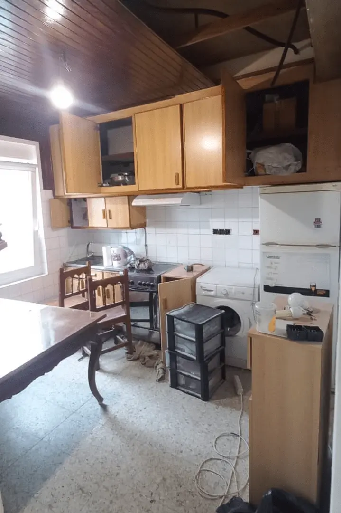
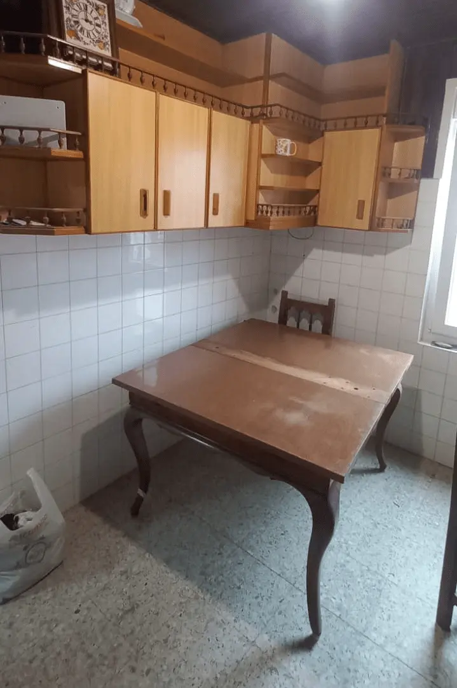
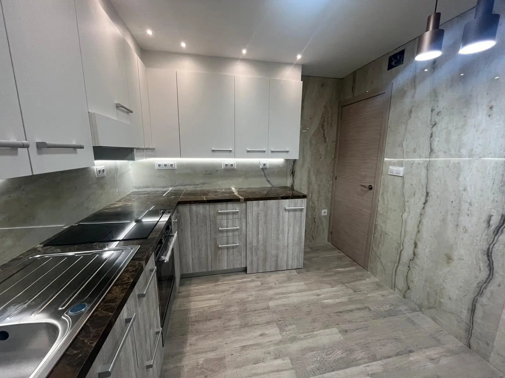
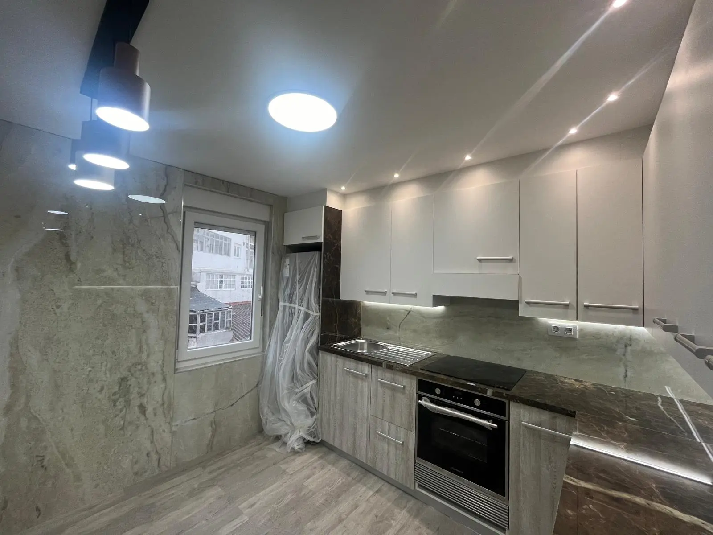

@@include('header.htm', {"title": "Proyecto de Reforma | RENOVARTE Santiago de Compostela", "description": "Proyecto de reforma y rehabilitación realizado por RENOVARTE en Santiago de Compostela, Ensanche, Castiñeiriño, Bertamiráns y alrededores."}) 
@@include('blocks/navigation-1.htm') 
@@include('blocks/page-header.htm', {"title": "Proyecto cocina"})

<section id="main-container" class="main-container">
  <div class="container">
    <div class="row">
      <div class="col-lg-8">
        <div id="page-slider" class="page-slider small-bg">

          <div class="item">
            
          </div>

          <div class="item">
            
          </div>

          <div class="item">
            
          </div>

          <div class="item">
            
          </div>
        </div>
        <!-- Page slider end -->
      </div>
      <!-- Slider col end -->

      <div class="col-lg-4 mt-5 mt-lg-0">
        <h3 class="column-title mrt-0">Reforma Completa de Cocina</h3>
        <p>Reforma integral de cocina realizada conjuntamente con la reforma del baño del proyecto anterior. Cambio completo de paredes, suelo, iluminación, pladur de techo, electricidad y fontanería. Una transformación total que moderniza completamente este espacio funcional del hogar.</p>

        <ul class="project-info list-unstyled">
          <li>
            <p class="project-info-label">Proyecto Asociado</p>
            <p class="project-info-content">Reforma de Baño (Proyecto anterior)</p>
          </li>
          <li>
            <p class="project-info-label">Ubicación</p>
            <p class="project-info-content">Santiago de Compostela</p>
          </li>
          <li>
            <p class="project-info-label">Trabajos</p>
            <p class="project-info-content">Paredes, Suelo, Luz, Pladur Techo, Electricidad, Fontanería</p>
          </li>
          <li>
            <p class="project-info-label">Tipo</p>
            <p class="project-info-content">Reforma de Cocina</p>
          </li>
          <li>
            <p class="project-info-label">Categorías</p>
            <p class="project-info-content">Residencial, Interiores</p>
          </li>
        </ul>
      </div>
      <!-- Content col end -->
    </div>
    <!-- Row end -->
  </div>
  <!-- Conatiner end -->
</section>
<!-- Main container end -->

@@include('footer.htm')
